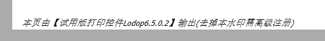

注册号无效排查（带图排查加记录）
做简单例子测试参考排查一下http://www.c-lodop.com/faq/ph01.html
先确保该注册语句执行了，每个打印方法里都要执行。
可以先做个简单例子测试下，
例如：
LODOP.PRINT_INIT("打印任务名");
LODOP.ADD_PRINT_TEXT(0,0,100,20,"文本内容一");
LODOP.SET_LICENSES........
LODOP.PRINT();
直接放到PRINT()语句前面测试下。
域名或ip是否和注册号对应
注册的是什类型的，如果是ip或域名，
访问的是否是注册的ip或域名，浏览器地址栏输入的是否是注册的ip或域名，
（1）.单独注册服务器ip地址，登陆访问方式是ip地址访问，例如：注册ip地址：192.168.0.1，登陆方式如下
：http：//192.168.0.1:8000/index.jsp等，域名访问时，注册信息无效。
（2）.单独注册域名：登陆访问方式是域名地址访问，例如：注册域名： www.c-lodop.com 登陆方式如下
：http://www.c-lodop.com/index.html等，ip地址访问时，注册信息无效
打印设计和打印维护关于按钮是否隐藏
进入打印设计或打印维护，查看关于按钮是否隐藏。
没隐藏：
关于按钮没隐藏，很可能注册语句没有生效，参考逐条排查一下http://www.c-lodop.com/faq/ph01.html
隐藏了：
用xps或pdf虚拟打印机直接打印输出成文件，查看下虚拟打印机输出的文件纸张下方是否有水印输出，
如果虚拟打印机无水印，该真实打印机有水印，排查链接里第十四条http://www.c-lodop.com/faq/ph01.html
打印维护的“关于”按钮也看不到了，真实打印仍有水印时，建议您重启一下该打印机。
排查下第十四条，或用虚拟打印机直接打印输出测试。
简短排查语句
注册的是什么类型的，如果是ip或域名注册，访问的是否是注册的ip或域名。
进入打印设计或打印维护，查看关于按钮是否隐藏。
访问的是否是注册的ip或域名，浏览器地址栏输入的是否是注册的ip或域名。
进入打印预览，查看打印预览下方状态栏是否显示了公司名。
查看打印预览下方状态栏是否显示了公司名，截图下预览下方状态栏的公司名状态。
参考排查一下http://www.c-lodop.com/faq/ph01.html
逐条排查下链接里的条目，特别是里面个别电脑出现水印的情况的条目。
清理下浏览器缓存试试。
私发一下注册语句，这边测试下。
参考排查一下http://www.c-lodop.com/faq/ph01.html
目前发现的注册号无效问题都在里面，逐条排查下。
发一下注册日期和邮箱，或注册的域名、公司名，这边查一下，是否是顶级注册号。
相关链接：注册号无效排查
图示与笔记
1.很久以前公司可能卖过普通的公司名注册，注册号都是数字构成。

实测结果，
（1）.不加注册语句，直接打印有水印。
（2）.加注册语句，没水印。
（3）.加上SET_PRINT_STYLEA(0,"AngleOfPageInside",-90);语句，有水印是带高级字样的水印。
（4）.打印设计和打印维护按钮（c-lodop下）没有隐藏。
（之前另一个用户，也是很久买的，那时候没c-lodop，所以c-lodop也有水印。）
参考http://www.c-lodop.com/faq/ph01.html
测试了下，确实旋转有水印，是不是很久之前购买的。
第九 原本普通注册，但打印程序调用了高级注册的特殊语句，例如类似下面语句：
SET_PRINT_STYLEA(0,"AngleOfPageInside",-90);
SET_PRINT_MODE("FULL_WIDTH_FOR_OVERFLOW",true);
SET_PRINT_MODE("FULL_HEIGHT_FOR_OVERFLOW",true);
SET_PRINT_MODE("TEXT_ONLY_MODE",true);
应该是公司名普通注册导致的，很久以前应该卖过公司名的普通注册，水印里包含高级字样。
高级注册，或顶级注册，可以支持几个功能。
2.公司名顶级注册，误认为在中文下只要用中文注册语句。
3.误认为注册语句执行一次就行，执行一次就注释掉了。
3.注册语句放在打印方法外执行了，没有每次打印执行。
4.注册语句书写错误。
5.ip域名注册，却在语句里自己加了公司名参数。
6.访问的地址和注册的地址不对应（注册错域名，域名访问注册的ip，误认为是打印的域名等）
目前发现的所有可能及排查步骤
第一 LODOP.SET_LICENSES语句没有执行；
第二 有的尽管看上去alert提示执行了，但因页面很多很乱，调用该语句的Lodop对象不是实际打印的那个， 这个问题当用URL打印且被打印页面也包含LODOP对象时更容易发生；
第三 如果是域名注册号，在测试时用的域名不对，例如注册时的域名是"www.abc.com"但测试时用的“127.0.0.1”“localhost”“abc.com”等； 域名的使用原则是：如果注册的是“abc.com”，那么可以用域名“www.abc.com”“xx.abc.com”等等，但反之则不对。
第四 注册号编码串由于复制拷贝等原因少了数字，一般是30个数字或32个字符；
第五 “域名注册号”使用语句的第一个参数加了内容，该语句的第一个参数必须是空字符，只有“公司名注册号”才必须有内容；
第六 注册语句有语法错误,有的函数名成了“SET_ LICENSES”而应该是“SET_LICENSES”（中间没空格）；
第七 客户端浏览器缓存(也就是浏览历史记录)在作祟,此时表现过个别电脑不行，其它电脑可以；
第八 客户端操作系统的语言选择了外文，表现为预览界面按钮变成英文的，而注册号是简体中文的，所以注册号无效， 解决办法是加语句：LODOP.SET_SHOW_MODE("LANGUAGE",0); 关于该语句参考样例19.
第九 原本普通注册，但打印程序调用了高级注册的特殊语句，例如类似下面语句：
SET_PRINT_STYLEA(0,"AngleOfPageInside",-90);
SET_PRINT_MODE("FULL_WIDTH_FOR_OVERFLOW",true);
SET_PRINT_MODE("FULL_HEIGHT_FOR_OVERFLOW",true);
SET_PRINT_MODE("TEXT_ONLY_MODE",true);
(这种情况的水印会有“去掉本水印需高级注册”字样)
第十 LodopFuncs.js文件的编码方式与页面编码不一致（例如UTF-8，此时可以用记事本软件把该js文件另存为UTF-8编码）。。
第十一 系统故障，最常见的是“软件出现乱码”， 出现注册无效，水印乱码
有一种原因是系统故障“软件出现乱码”，
用下图解决：安装360卫士 用360卫士进行修复。
第二个可能原因：操作系统修改区域语言与操作系统不一致。
用下图解决：操作系统修改区域语言与操作系统一致。
第十二 lodop版本太低，收注册号的邮箱里会有说明，例如：Lodop(6.111及之后版本)，排查版本号是否过低导致注册号无效，可安装最新版对比测试。
第十三 非中文windows操作系统中体现授权无效，分析程序是否设置了显示语言，语句：LODOP.SET_SHOW_MODE("LANGUAGE",0);
去掉该语句，重启一下C-Lodop验证。
第十四 个别打印机的缓存机制在捣乱，目前发现有些打印机会重复输出旧的打印任务，这应该属于打印机故障范畴(很奇葩的故障)，但会严重影响注册号的测试认定。如果以上所有步骤都排查无误，而且打印维护的“关于”按钮也看不到了，真实打印仍有水印时，建议您重启一下该打印机。